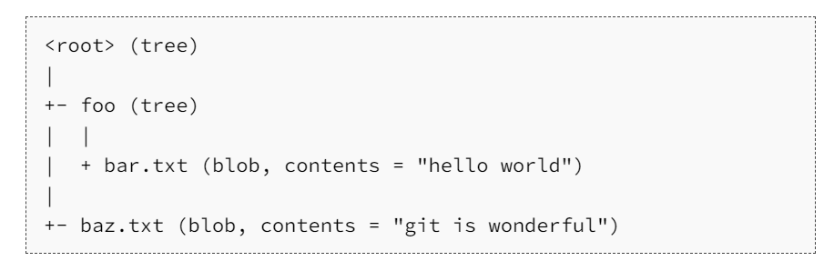
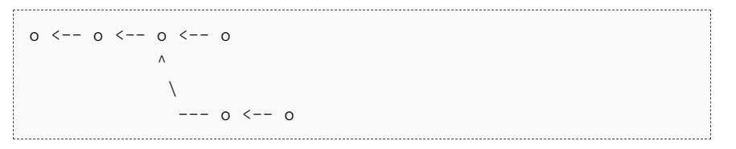
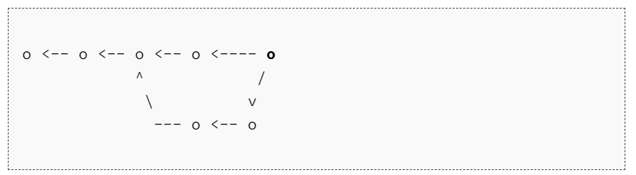

Git版本控制¶
- Version
- huangnan.lin
- 2023-11-10
- git learning notes
- review
Info
- Git 的数据模型
- 仓库
- 暂存区
- GIT的命令行接口
Git 的数据模型¶
Git 拥有一个经过精心设计的模型，这使其能够支持版本控制所需的所有特性，例如维护历史记录、支持分支和促进协作。
快照¶
Git 将顶级目录中的文件和文件夹作为集合，并通过一系列快照来管理其历史记录。
在Git的术语里，文件被称作Blob对象（数据对象），也就是一组数据。目录则被称之为“树”，它将名字与 Blob 对象或树对象进行映射（使得目录中可以包含其他目录）。
快照则是被追踪的最顶层的树。例如，一个树看起来可能是这样的：

这个顶层的树包含了两个元素，一个名为 “foo” 的树（它本身包含了一个blob对象 “bar.txt”），以及一个 blob 对象 “baz.txt”。
历史记录建模：关联快照¶
线性历史记录是一种最简单的模型，它包含了一组按照时间顺序线性排列的快照。不过处于种种原因，Git 并没有采用这样的模型。
在 Git 中，历史记录是一个由快照组成的有向无环图。
Git 中的每个快照都有一系列的“父辈”，也就是其之前的一系列快照。快照具有多个“父辈”而非一个，因为某个快照可能由多个父辈而来。例如，经过合并后的两条分支。
在 Git 中，这些快照被称为“提交”。类似下图所示：

箭头指向了当前提交的父辈。在第三次提交之后，历史记录分岔成了两条独立的分支。这可能因为此时需要同时开发两个不同的特性，它们之间是相互独立的。开发完成后，这些分支可能会被合并并创建一个新的提交，这个新的提交会同时包含这些特性。新的提交会创建一个新的历史记录，看上去像这样（最新的合并提交用粗体标记）：

Git 中的提交是不可改变的。但这并不代表错误不能被修改，只不过这种“修改”实际上是创建了一个全新的提交记录。而引用（参见下文）则被更新为指向这些新的提交。
数据模型及其伪代码表示¶
// 文件就是一组数据
type blob = array<byte>
// 一个包含文件和目录的目录
type tree = map<string, tree | blob>
// 每个提交都包含一个父辈，元数据和顶层树
type commit = struct {
parent: array<commit>
author: string
message: string
snapshot: tree
}
对象和内存寻址¶
Git 中的对象可以是 blob、树或提交：
type object = blob | tree | commit
Git 在储存数据时，所有的对象都会基于它们的 SHA-1 哈希 进行寻址。
objects = map<string, object>
def store(object):
id = sha1(object)
objects[id] = object
def load(id):
return objects[id]
Blobs、树和提交都一样，它们都是对象。当它们引用其他对象时，它们并没有真正的在硬盘上保存这些对象，而是仅仅保存了它们的哈希值作为引用。
例如，上面例子中的树（可以通过 git cat-file -p 698281bc680d1995c5f4caaf3359721a5a58d48d 来进行可视化），看上去是这样的：
100644 blob 4448adbf7ecd394f42ae135bbeed9676e894af85 baz.txt
040000 tree c68d233a33c5c06e0340e4c224f0afca87c8ce87 foo
树本身会包含一些指向其他内容的指针，例如 baz.txt (blob) 和 foo (树)。如果我们用 git cat-file -p 4448adbf7ecd394f42ae135bbeed9676e894af85，即通过哈希值查看 baz.txt 的内容，会得到以下信息：
git is wonderful
引用¶
所有的快照都可以通过它们的 SHA-1 哈希值来标记,但这太不方便，因为记不住一串 40 位的十六进制字符。
针对这一问题，Git 的解决方法是给这些哈希值赋予人类可读的名字，也就是引用（references）。
引用是指向提交的指针。与对象不同的是，它是可变的（引用可以被更新，指向新的提交）。例如，master 引用通常会指向主分支的最新一次提交。
references = map<string, string>
def update_reference(name, id):
references[name] = id
def read_reference(name):
return references[name]
def load_reference(name_or_id):
if name_or_id in references:
return load(references[name_or_id])
else:
return load(name_or_id)
有一个细节需要我们注意， 通常情况下，我们会想要知道“我们当前所在位置”，并将其标记下来。这样当我们创建新的快照的时候，我们就可以知道它的相对位置（如何设置它的“父辈”）。在 Git 中，我们当前的位置有一个特殊的索引，它就是 “HEAD”。
仓库¶
最后，我们可以粗略地给出 Git 仓库的定义了：对象 和 引用。
在硬盘上，Git 仅存储对象和引用：因为其数据模型仅包含这些东西。所有的 git 命令都对应着对提交树的操作，例如增加对象，增加或删除引用。
Tip
当输入某个指令时，请思考一下这条命令是如何对底层的图数据结构进行操作的。
另一方面，如果希望修改提交树，例如“丢弃未提交的修改和将 ‘master’ 引用指向提交 5d83f9e 时，有什么命令可以完成该操作（针对这个具体问题，您可以使用 git checkout master; git reset --hard 5d83f9e）
暂存区¶
Git 中还包括一个和数据模型完全不相关的概念，它确是创建提交的接口的一部分。
就上面介绍的快照系统来说，您也许会期望它的实现里包括一个 “创建快照” 的命令，该命令能够基于当前工作目录的当前状态创建一个全新的快照。
有些版本控制系统确实是这样工作的，但 Git 不是。我们希望简洁的快照，而且每次从当前状态创建快照可能效果并不理想。例如，考虑如下场景，您开发了两个独立的特性，然后您希望创建两个独立的提交，其中第一个提交仅包含第一个特性，而第二个提交仅包含第二个特性。或者，假设您在调试代码时添加了很多打印语句，然后您仅仅希望提交和修复 bug 相关的代码而丢弃所有的打印语句。
Git 处理这些场景的方法是使用一种叫做 “暂存区（staging area）”的机制，它允许您指定下次快照中要包括那些改动。
Git 的命令行接口¶
基础¶
git help [command]: 获取 git 命令的帮助信息
git init: 创建一个新的 git 仓库，其数据会存放在一个名为 .git 的目录下
git status: 显示当前的仓库状态
git add [filename]: 添加文件到暂存区
git commit: 创建一个新的提交
git log: 显示历史日志
git log --all --graph --decorate: 可视化历史记录（有向无环图）
git diff [filename]: 显示与暂存区文件的差异
git diff [revision] [filename]: 显示某个文件两个版本之间的差异，此命令用来比较一个文件的两个不同版本之间的差异。在这里，[revision]代表提交哈希、分支名称或任何其他引用特定历史点的标签，而[filename]则是你想要查看差异的文件名。
Example
git diff 5d83f9e README.md 这条命令会显示自从哈希值为5d83f9e的提交之后，README.md文件发生了哪些变化。
如果想比较当前工作目录中的文件与存储库中某个特定修订版本的差异，可以省略第二个修订参数
git diff HEAD~1 README.md会比较比较README.md与前一个提交之间的差异
git diff origin/main README.md会比较本地README.md与远程main分支上的文件差异
git checkout [revision]:该命令用于切换到存储库中的不同版本。[revision]可以是提交哈希、分支名称、标签等。这个命令更新HEAD指针并更改你当前所在的分支（如果指定了一个分支名）或者离开所有分支，进入"detached HEAD"状态（如果指定的是一个提交哈希）。
Example
git checkout feature-branch # 切换到名为feature-branch的分支
git checkout 5d83f9e # 进入到“脱离头指针”状态，查看5d83f9e这个提交
git checkout v1.0 # 切换到名为v1.0的标签指向的提交
分支和合并¶
git branch: 显示分支
git branch [name]: 创建分支
git checkout -b [name]: 创建分支并切换到该分支,相当于 git branch [name]; git checkout [name]
git merge [revision]: 合并到当前分支
git mergetool: 使用工具来处理合并冲突
git rebase: 将一系列补丁变基（rebase）为新的基线
远端操作¶
git remote: 列出远端
git remote add [name] [url]: 添加一个远端
Example
命令 git remote add [name] [url] 用于向 Git 仓库添加一个新的远程仓库引用。这允许你可以轻松地引用该仓库，从而与之进行推送（push）和拉取（pull）操作。以下是如何使用这个命令：
[name] 是你为远程仓库起的简称，通常情况下，主要远程仓库会被命名为 origin。
[url] 是远程仓库的URL地址。对于GitHub、GitLab、Bitbucket或其他 Git 托管服务，这通常是 HTTPS 或 SSH 格式的 URL。
git remote add upstream https://github.com/user/project.git
执行上述命令后，upstream 就成了远程仓库的简称。你可以使用 git push upstream branch-name 来推送分支到 upstream，或者使用 git fetch upstream 来获取 upstream 的更新。
git push [remote] [local branch]:[remote branch]: 将对象传送至远端并更新远端引用
Note
命令 git push [remote] [local branch]:[remote branch] 用于将本地分支的更改推送到远程仓库，并可选择更新或创建对应的远程分支。这是Git中一个常见的操作，用于共享你的提交到远程服务器。以下是如何使用这个命令：
[remote] 是你之前通过 git remote add 或其他方式添加的远端仓库的名称。例如，最常见的叫做 origin。
[local branch] 是你本地的分支名称，你想要把它推送到远程仓库。
[remote branch] 是远程分支的名称，你想要你的本地分支被推送和合并进去。如果这个远程分支不存在，它将会被创建。 举例：
git push origin master:master
以上命令将本地的 master 分支推送到名为 origin 的远程仓库上同名的 master 分支。如果远程的 master 分支尚未存在，它将会被创建。
git push origin feature-branch
如果不指定远程分支的名称，默认会使用与本地分支相同的名称。所以上面的命令等价于：
git push origin feature-branch:feature-branch
如果你想将本地分支推送到远程仓库上的不同名字的分支，可以这样做：
git push origin feature-branch:new-feature
这样，本地的 feature-branch 将会推送到远程仓库中名为 new-feature 的分支上。如果 new-feature 分支不存在，它将会被创建。
git branch --set-upstream-to=[remote]/[remote branch]: 创建本地和远端分支的关联关系
git fetch: 从远端获取对象/索引
Warning
命令 git fetch 用于从远程仓库下载对象和引用（如分支和标签）。它会获取远程仓库的所有更改（新的提交、分支等），但不会自动合并或修改你的当前工作。git fetch 命令通常这样使用：
git fetch [remote] [remote] 是远程仓库的名称，例如 origin。如果未指定远程仓库名称，Git 默认会从默认的远程仓库（通常是 origin）获取数据。
执行 git fetch 时，以下操作会发生：
它将检查你定义的远程仓库，并获取它有而你没有的所有信息。
下载所有远程分支上的新提交到本地仓库中。
更新本地的远端跟踪分支（通常名为 origin/[branch-name]），这些分支对应于远程仓库的状态。
git fetch 不会改变你的本地工作目录或当前分支**。换句话说，它不会自动将远程的更改合并到当前分支中。要完成这个过程，你需要手动合并或使用 git pull 命令，后者是 git fetch 和 git merge 的组合。
一个常见的用法是，在切换到你想要更新的分支后先执行 git fetch，然后再与相应的远端跟踪分支合并：
git fetch origin git merge origin/master 或者直接使用 git pull 来获取并合并更改：
git pull origin master 使用 git fetch 的好处是，你可以在合并之前先审查或测试远程分支上的改动，这给你提供了更多控制性和灵活性。
git pull: 相当于 git fetch; git merge
Example
git pull origin feature-branch 相当于git fetch origin的feature-branch的更新，然后git merge 到本地仓库的当前所在分支
git pull其实也只是更新了当前分支，并不是整个本地仓库
git clone: 从远端下载仓库
撤销¶
git commit --amend: 编辑提交的内容或信息
Example
命令 git commit --amend 用于修改最近的一次提交。这个命令会将暂存区中的当前更改与前一次提交合并，并创建一个新的提交。如果没有新的更改被暂存，则 git commit --amend 将只是重新编辑上一次提交的提交信息。
使用 git commit --amend 可以做以下事情：
修正提交信息：如果你刚刚做了一个提交，然后意识到提交信息有错误或需要补充，可以使用 --amend 选项来更新这条提交信息。
git commit --amend -m "新的提交信息"
这会打开你配置的文本编辑器，让你编辑提交消息。如果你在命令中包含 -m "新的提交信息" 选项，则Git会直接使用该消息替换掉前一次的提交信息，而无需打开文本编辑器。
添加遗漏的更改：如果你在上次提交后立即意识到忘记了将某些变更加入提交，你可以简单地暂存那些更改并运行 --amend 命令：
git add 遗漏的文件或更改
git commit --amend
不更改提交信息：如果你不想更改提交信息，只想把漏掉的更改加入上一次提交，可以这样执行命令：
git commit --amend --no-edit
使用 --no-edit 选项，Git将直接重用上一次提交的消息，而不会打开文本编辑器。
请注意，使用 git commit --amend 会重写Git历史，因为它实际上是用一个新的提交替换了最后一次的提交。如果你已经将原始提交推送到了远程仓库，那么在 --amend 后再次推送需要使用 --force 选项，例如 git push origin branch-name --force。但是要小心，因为强制推送会覆盖远程仓库中的历史，可能会影响其他协作者的工作。
git reset HEAD [file]: 恢复暂存的文件
Quote
命令 git reset HEAD [file] 用于将指定文件从暂存区（也叫作索引或stage）中移除，但不会影响工作目录中的文件内容。这个命令通常在你已经通过 git add 将文件暂存准备进行提交，但随后意识到并不想包含这些更改在接下来的提交中时使用。
例如，如果你执行了 git add file.txt 来暂存一个名为 file.txt 的文件，并且现在你决定你不想在下次提交中包含这个文件的变更，你可以运行以下命令来撤销暂存操作：
git reset HEAD file.txt
这条命令会将 file.txt 文件从暂存区中移出，但是对该文件的更改依然保留在工作目录中。简单地说，它只撤销了 git add 操作，而没有撤销对文件的编辑。
请注意，在最新版本的 Git 中，使用 HEAD 是可选的。你可以直接执行 git reset file.txt 来达到相同的效果。HEAD 只是明确地告诉 Git 你是要从当前提交的上下文中重置。
如果你想要恢复所有已经暂存的文件，不需要指定文件名：
git reset # 默认撤销全部暂存的更改
git reset HEAD # 同上，效果一样
git checkout -- <file>: 丢弃修改
git restore: git2.32版本后取代git reset 进行许多撤销操作